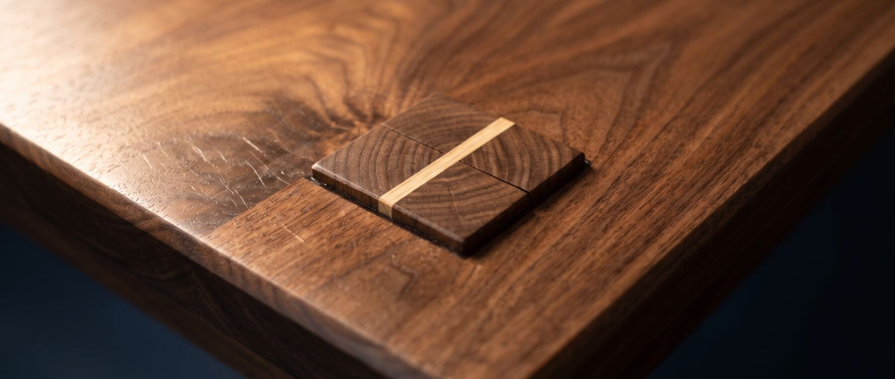
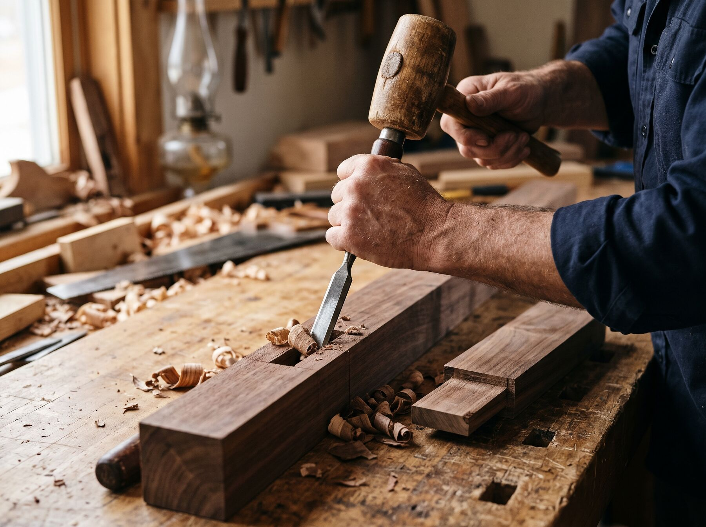
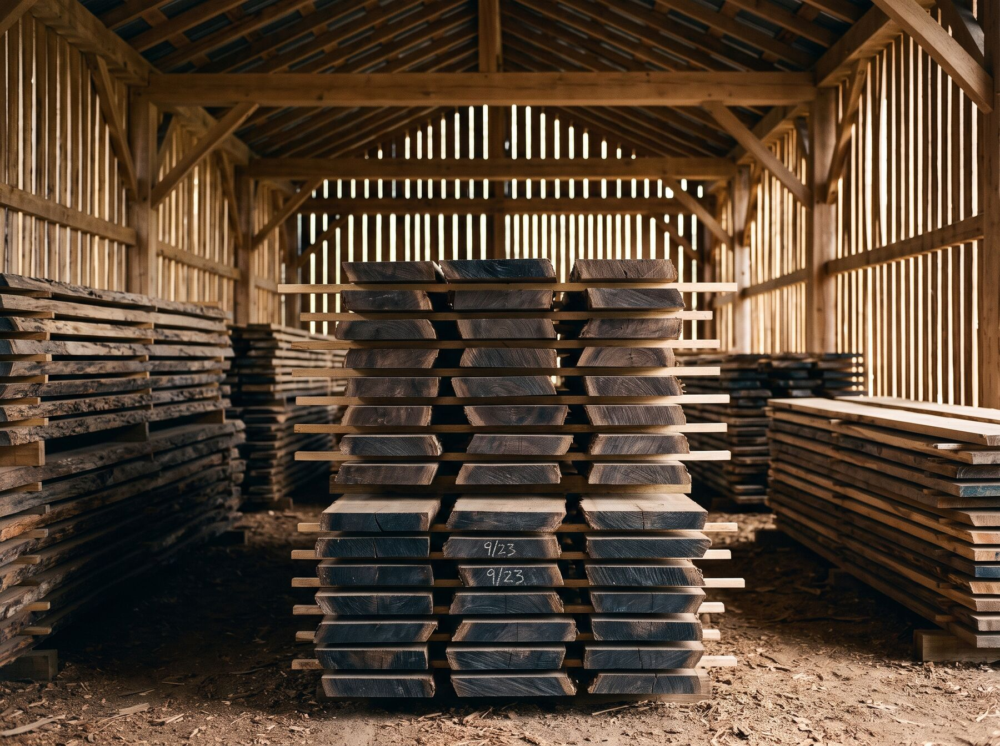
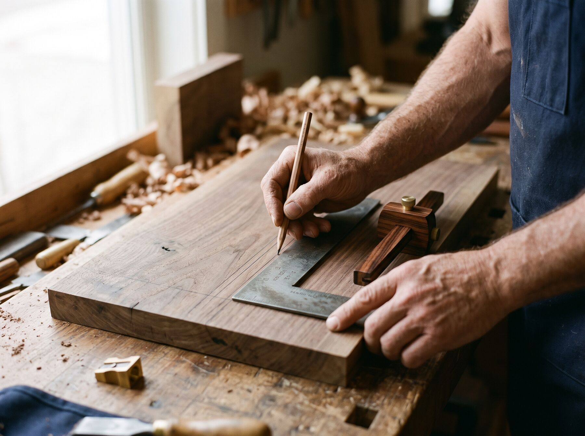
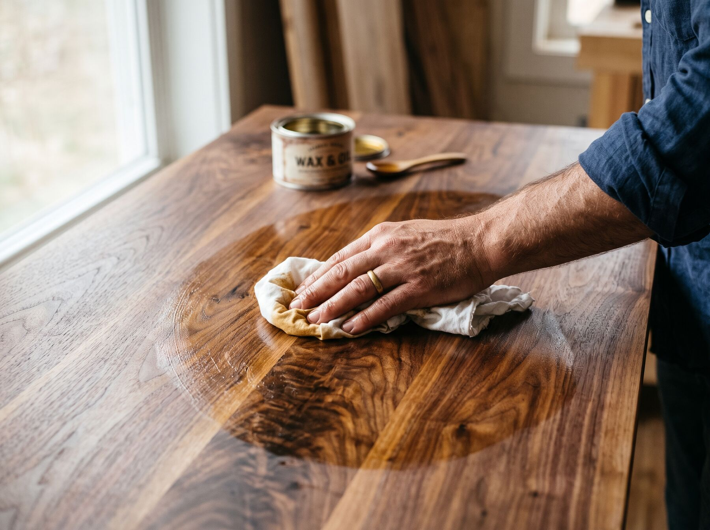
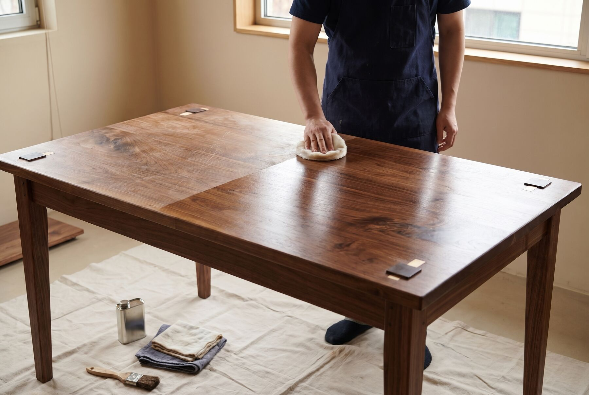

[ JOINT ]Mortise and tenon, cut by hand. No nails, no screws.
Solid wood furniture joined without a single nail or screw. Every piece is cut, fitted and finished in our atelier, carries a passport with its maker's name, and is cared for long after it leaves.
Discover the collection





Collection